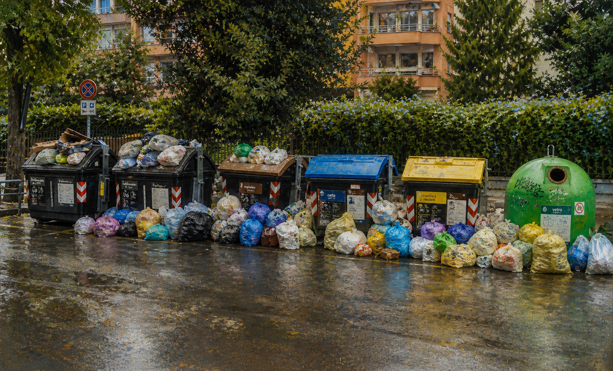

Cassonetti pieni, sacchi per strada e un'abitudine che fa più danni dei rifiuti: quando il degrado diventa invisibile, diventa normale.
Vivo a Roma, in una zona chiamata Villa Gordiani. Il nome viene da un parco vicino, dove si trovano i resti di un'antica villa romana. È un quartiere normale, e proprio per questo, quello che accade con i rifiuti è ancora più significativo.
A ridosso delle festività, i cassonetti non vengono svuotati. Si riempiono. Straripano. E a quel punto succede qualcosa di ormai automatico: la spazzatura finisce fuori. Sacchi accatastati, cartoni appoggiati, rifiuti che si allargano nello spazio urbano. Non è un'eccezione; è una routine. E la cosa più inquietante è questa: ci siamo abituati.
Se chiedi perché succede, le risposte cambiano continuamente: manca personale, mancano mezzi, mancano impianti. L'ultima versione che mi è arrivata riguarda AMA S.p.A.: "i dipendenti sono tutti invalidi". È una di quelle spiegazioni che sembrano risolvere tutto… ma in realtà non spiegano niente. Non esistono dati credibili che indichino questa come causa principale, e soprattutto: un problema che dura da decenni non può essere ridotto a una sola variabile. È una narrazione semplice per un problema complesso.
Il problema dei rifiuti a Roma è strutturale. Non nasce oggi, e non ha una sola origine. Le cause principali si sommano:
Il punto non è che non si sappia cosa fare. Il punto è che le soluzioni sono difficili. Servono investimenti lunghi, nuovi impianti (spesso contestati) e continuità politica e gestionale. E tutto questo raramente si realizza insieme. Il risultato è una città sospesa: sempre in emergenza, ma senza mai uscire davvero dall'emergenza.
C'è una frase che pesa più di tutte:
Quando il degrado diventa invisibile, diventa accettabile. E quando diventa accettabile, smette di essere urgente. Questa è la vera svolta negativa: non nei rifiuti, ma nello sguardo di chi li vede.
Nel 2026 il quadro è leggermente cambiato, ma non risolto. I segnali positivi e le criticità persistenti coesistono:
Qui il discorso si chiude — ma in realtà ricomincia. Possiamo fare poco? Sì. Possiamo fare niente? No. Nel concreto: evitare di contribuire all'effetto valanga, rispettare orari e modalità, usare i canali di segnalazione — anche come pressione, non solo come richiesta.
Ma c'è un livello più profondo. Possiamo non abituarci. Possiamo continuare a vedere il problema. Possiamo parlarne, scriverne, renderlo visibile.
Perché una città cambia davvero solo quando chi la vive smette di accettare ciò che non funziona. E allora il punto non è solo tenere pulito: è tenere sveglia l'attenzione.
Non basta fare la propria parte; serve anche essere un pungolo. Perché il degrado si espande nel silenzio, ma si incrina quando qualcuno torna a guardarlo davvero.